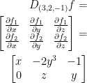
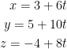

Created Saturday 27 June 2020
I'm starting this Monday the 29th. Gotta rush through and balance with the new lectures.
Question 1
If  , find the following partial derivatives:
, find the following partial derivatives:
1) fx
2) fy
Remember, sin(x) is essentially a static value so we get rid of it.
3) fxx
In case it wasn't obvious, the x2 denotes we are taking a second derivative.
4) fxy
5) fyy
6) fxxy
7) fxyx
Question 2
This question is pretty much just the first one. All you need to know is what a second-order partial derivative is to solve this question. We pretty much just double up on the partial derivative. Observe the following:
To save time, I'm just gonna write the answers.
Question 2 pt. 1
To help me find the second-order partial derivatives, I shall first take just a regular ol' derivative in regards to x and y.
We can simplify the above with the trig identity sin2θ = 2sinθ cosθ
Now for the second-order partial derivatives!
fxx

fyy
fxy

fyx

I believe the professor got that last one wrong on his answer sheet when cross referencing an online calculator.
Question 2 pt. 2
I'm skipping this to save time. Should be the same principle as part 1.
You'll have to find all of the following if you choose to do it.
fxx, fxy, fxz
fyx, fyy, fyz
fzx, fzy, fzz
Question 3
Let . Find the directional derivative of f at a = (2, 1, 3) in the direction v = (1, 0, -2). What is the largest value of the directional derivative of f at a and in what direction does it occurs?
So you're probably askin' yourself: wtf is a directional derivative? I'm wonderin' the same damn thing.
For more information, check out the Derivatives section of the wiki. However, you'll likely find that it won't help you solve this problem. That's because the professor left out some important formulas that would really help us out here. So, I'll do that for us.
According to mathworld, the directional derivative can be defined like so:

This means that we take the dot (inner) product of the gradient of f and a normalized direction u.
Alright, so let's break this down by starting with the gradient.
Remember, the gradient is just the following vector:

So, we just take the partial derivative of each parameter for function f like so:

So then, our gradient ∇f is just (4x, 6y, 2z)
Now we need to normalize our direction vector. Let u be or normalized vector. We do the following:

Finally! We can wrap this up. Let's return to the equation for the direction derivative:
Right before we plug our values in, let's pass our vector a = (2, 1, 3) into our gradient.

The following is the directional derivative:

Yay! We did it. Now we need to know the largest value of the directional derivative. To do this, just find the norm of the gradient of f at point a.

That's it! That's the largest directional derivative at point a! 
But what direction does it occur in? Well, just divide our gradient with  like so:
like so:

And that's the direction it occurs in!
Question 4
At first glance, this problem seems a bit intimidating. My first instinct was that we need to bust out the definition of a derivative which is a limit in the form of:

Hopefully, this brings back memories of calculus 1.
This is on the right track to the solution but not quite there. I feel as though I have a good understanding of why the professor's answer works though.
To begin, let's find the partial derivative of the function f in regards to x.
If you're wondering why we get "0 - 0" for the numerator at one point, it's because we know that if any value passed into f is 0 then we have 0. So, f(t, 0) will be 0 because the y is 0 and the piecewise function says that the result is 0 when either x or y are 0.
I hope that made sense... My explanation was rather redundant.
Finding the partial derivative of f in regards to y, we get the same answer: 0.
So, function f has partial derivatives at both x and y!
And we just showed it.
However, f is clearly not continuous at (0, 0) due to that sudden jump from 1 to 0. We can tell that the does not exist. It is discontinuous. And because it is discontinuous, it is not differentiable at (0, 0).
Question 5
Let  be defined by:
be defined by:
Find Df(3, 2, -1).
Believe it or not, this is actually pretty easy!
At least, it will be in a second here.
To begin, we just need to find the Jacobian matrix. The general form looks like this:

Let's get started.
First, define what our functions are like so:
Remember, we are going from a 3D space to a 2D one. As such, we'll have two functions that will make up the rows of our Jacobian matrix for this new space.
Since we are coming from a 3D space, we'll have 3 columns. One for each input essentially.
Let's find that Jacobian Matrix!

Nice.
So... Uh. Hmm. How about that Df(3, 2, -1)? What do we do now?
It's obvious (for once :\)
Just plug it in to our Jacobian matrix like so:

We're done!
Question 6
Let and suppose that x = tcos(t) and y = tsin(t).
Find
My initial reaction was huh... Can't I just replace everything with the t versions and just try to derive like that?
Sadly, this gave me a (I presume) unsolvable mess. The professor proposes we do something that I didn't quite think of though. Apparently, we have this:
On the solution sheet, he had a typo where instead of y we have x. This is wrong.
To make this easy on ourselves, let's start with the derivatives of functions x and y like so:
To save time, I didn't write everything out. If you're not sure how to differentiate tcost and tsint, refer to the product rule when taking derivatives.
Now let's do the next part:
Putting these together, we have this:
Now, we just plug in! So, let us have the following:
For x and y, we just passed in π/2 for t.
Finally! We can finish this darn thing.
So there we have it! The final answer is .
I'm quite surprised I managed to end up with the same answer as the professor. I was quite certain something was going to go wrong. Oh well. Hurray!
Question 7
Suppose is the polar coordinate map defined by:
Let  be a differentiable function and set
be a differentiable function and set  . Find and .
. Find and .
Quick note
In case you were wondering, is just  which is read as 'phi.' The version of phi the professor uses in the equation above is the version of phi commonly used in Europe. Just a little semantic detail that I hope won't throw you off.
which is read as 'phi.' The version of phi the professor uses in the equation above is the version of phi commonly used in Europe. Just a little semantic detail that I hope won't throw you off.
Also, r is radius and theta is the degrees of rotation.
Remember, polar coordinates are just another way of graphing vectors and whatnot. Instead of moving along a grid x units then y units, we instead rotate to match the orientation we want to be in then extend the desire amount. It's as though we found the hypotnuse of x and y then rotated.
I hope my explanation makes sense...
Great. Cause after working through the problem it doesn't even matter...
Back to the problem at hand!
After looking at the professor's solution, it's apparent that this problem is rather simple. No polar coordinate knowledge needed!
So, we have the composite function . We can get our final answer by applying the chain rule!
Observe:
That's it. Yeah, I'm surprised to.
Question 8
Let and . Find the derivative of .
Not a bad problem. To save time, I went straight to the professor's answer and it makes perfect sense. Let's begin!
Let us have function F as defined below:
1) Directly
With our nicely defined function F, we just find the gradient like so:
And that's it! Were done! I didn't bother write our all the steps for taking the derivative. It's rather easy so I hope you'll be able to do it on your own.
2) Chain Rule
This one is still easy but a bit... Intense.
I'm going to just retype the professor's solution but with some slight changes and comments.
Let us have the following:
Now let's dive into that chain rule!
And we're done!
Question 9
Let and a curve in with and . Find the tangent vector to the image of the curve under f at the point t = 0.
This is actually a fairly easy question once you get past the new terminology.
Perhaps the best way to begin explaining this problem is with this picture:
Our γ (gamma) function takes a single real number. In turn, it gives us a point on a curve (the diagram has that curve in the third dimension but the question itself has it in the 2nd).
Moving on, the derivative of will give us our tangent vector.
Alright, so let's delve a bit deeper into this. First, let us have the following:
The function Y will just be a shorthand for our composite function f o γ.
Next, let us take the derivative of Y via the chain rule like so:
With this form, we can start on the actual problem.
First off, we want to find the tangent vector to the image of the curve γ(t) under f at the point t = 0. As such, let us pass in t as 0 to the equation we just wrote out like so:
We're not done yet but I want to point out a couple of things. First off, the problem states that γ(0) = (0, 0). As such, we will find the derivative of f in regards to (0, 0). Also, we are given that  . As such, we just replace γ' with the vector (1, 1).
. As such, we just replace γ' with the vector (1, 1).
Before we can finish, we need to know what D(0, 0)(f) is. We do that with a Jacobian matrix like so:
Now we can plug this result in and get our answer:
Finally, we have Y'(0) = (2, 0)
Question 10
Find the equation of the tangent plane to the graph of:
at the point (1, 0, 2).
Easy! Remember, the equation of a plane takes this general form:
a, b, and c are the partial derivatives of x, y, and z respectively when given our point (1, 0, 2). So then, let us find those partial derivatives!
We don't look for a partial in regards to z because our function f doesn't take a z.
Likewise, we get the following for our point (1, 0, 2):
In this case, our a = 2, b = 1, and c = 2. Remember, our point itself has z = 2 so we shall use that.
Putting it all together, we get:
So then, our final answeris z = 2x + y.
Question 11
Let . Find the tangent hyperplane for the following three scenarios:
Don't let the word hyperplane scare you. It's just a plane with n-1 dimensions. One less dimension than what we're currently in.
1) at  with a ≠ 0
with a ≠ 0
In know that a plane has this general form:

We also know that for a, b, and c we take the partial derivative in regards x, y, and z respectively. So then, let's generalize this for n-dimensions. We'll get something that will look like this:
I'm not sure if that's the proper syntax. This is my own interpretation of the problem.
Moving forward, let's find the derivative in general for a.
Our professor did only wrote ai instead of 2ai. I believe this was a mistake.
We now have:

This isn't quite the answer the professor got. As of now, I can't seem to achieve his final answer which was:
I'm not sure what I'm doing wrong.
2) at
The professor states that we get y = xj.
3) at
Our professor touches upon some limit stuff I'm too sleepy to examine right now. I'll return to this problem if I can.
Question 12
Show that the function:
is harmonic in .
At this point, I'm doing questions 12 onward the day before quiz 2. Been feelin' real sick and tired lately. Fingers crossed I'll be ready for tomorrow. As such, I'm going to be skipping questions and being messier so I can at least have them roughly understood.
The bread and butter for this problem is the Laplacian operator. If we find the laplacian of the function and it all adds to 0, then it's harmonic.
I tried taking the derivatives by hand and it was a rather lengthy and time consuming process. Would not recommend on an exam.
Question 13
Write the Laplacian in polar coordinates x = rcosθ and y = rsinθ.
To begin, he wants us to approach this problem similar to how we did with question 7. To quote question 7:
"Suppose that φ (phi) is the function  that maps like so:
that maps like so:

Let 
be a differentiable function and set ."
First, let's find the first partial derivative in regards to r and θ.
He forgot the negative in the second equation above.
I'm having trouble figuring out how he did this question. I'm skipping it.
Question 14
Let  be defined by:
be defined by:
Show that the directional derivative of f at (0, 0) exist along any direction but f is not differentiable at the origin.
There's a lot to take in here and I don't have time.
Question 15
He says it's very easy. I'm a little confused as to how to approach. I'm skipping for now.
Question 16
Find the equation of a tangent plane and the euqation of a normal line to the surface at the point P(3, 5, -4).
Finally! Something that's doable.
Remember that the following is the equation of a plane:

Let
Then we have the gradient
Remember, we take the partial of f in regards to x, y, and then z to get that gradient.
Next, we pass P into f like so:
6, 10, and 8 will be our a, b, and c respectively for the final tangent plane equation that is as follows:
The 3, 5, and -4 are from our original point P which was the vector (3, 5, -4).
Next, we need the normal line at P. We get that from the following:
Let v = (6, 10, 8) and a = (3, 5, -4).

And that's our final answer
Question 17
Find the parametric equations for the line tangent to the curve given by the intersection of the surfaces at the point .
First, we have two surfaces that we shall refer to as the following two functions:
To quote the professor, "we need to find two normal vectors to these surfaces and then calculate their cross product to produce a vector which is tangent to both surface and, so, tangent to their intersection."
Essentially, we need to find the normal line for each surface and then take their cross product which will produce a vector orthogonal to both normal lines.
To achieve this, first you need to find the gradient vector for both f and g.
Now pass in our given point  like so:
like so:
To save time, I'm not going to go through the motions but, as stated by the professor, the cross product is:
To get that normal line, we do:

Where and v was the cross product .
As such, our final solution is:
Question 18
Find the points on the ellipsoid (it's like a sphere but a bit stretched out) represented by where the tangent plane is parallel to the plane
Let .
The normal to the tangent plane at a point (x, y, z) on the ellipsoid is given by:
Likewise, let n = (3, -2, 3) which were the coefficients of the plane  .
.
Now then, if ∇f is a scalar multiple of n at a point on the ellipsoid, then, the tangent plane at that point will be parallel to the plane 3x - 2y + 3z = 1. This happens as follows:
In case you couldn't tell, λ is some scalar multiple. We can now solve for x, y, and z.
We can now plug these into our ellipsoid equation like so:
We can then solve for λ which gives us x, y, and z.
Question 19
Find the critical points of the function  such that and investigate their nature.
such that and investigate their nature.
To begin, we need to find the critical points. To do this, we take the partial derivatives of f in regards to x and y then see where they equal 0.

Now we can solve for what x and y are. To do this, use systems of linear equations. I hope you remember how to do that... I'll get you started at least:

Remember, a critical point appears when the derivative is 0. As such, we set both derivatives equal to 0 and solve for our critical point.
By the end, you should have the following as your critical point:
This is the answer the professor gave us and I got the same answer when solving for x and y on my whiteboard.
Now then, by investigate their nature our professor is asking if the critical point is a local minimum, a local maximum, or a saddle point. To figure this out, we need a Hessian matrix.
In general, it looks like this:

So, let's find those second partial derivatives!

We then have the Hessian matrix:
The determinate of this is:
2*2 - 1 = 4 - 1 = 3
Since the determinate of our Hessian matrix is 3 which is > 0 we have a local minimum!
Question 20
Finally... And it's only 11:53pm the night before quiz 2.
Let a > 0, b > 0, and c > 0. Determine the minima and maxima of
on the ellipsoid
I'm tired. I'll touch more upon this in the morning. Maybe...
{kind=link}
{kind=link}
{kind=link}
{kind=link}
{kind=link}
{kind=link}
{kind=link}
{kind=link}
{kind=link}
{kind=link}
{kind=link}
{kind=link}
{kind=link}
{kind=link}
{kind=link}
{kind=link}
{kind=link}
{kind=link}
{kind=link}
{kind=link}
{kind=link}
{kind=link}
{kind=link}
{kind=link}
{kind=link}
{kind=link}
{kind=link}
{kind=link}
{kind=link}
{kind=link}
{kind=link}
{kind=link}
{kind=link}
{kind=link}
{kind=link}
{kind=link}
{kind=link}
{kind=link}
{kind=link}
{kind=link}
{kind=link}
{kind=link}
{kind=link}
{kind=link}
{kind=link}
{kind=link}
{kind=link}
{kind=link}
{kind=link}
{kind=link}
{kind=link}
{kind=link}
{kind=link}
{kind=link}
{kind=link}
{kind=link}
{kind=link}
{kind=link}
{kind=link}
{kind=link}
{kind=link}
{kind=link}
{kind=link}
{kind=link}
{kind=link}
{kind=link}
{kind=link}
{kind=link}
{kind=link}
{kind=link}
{kind=link}
{kind=link}
{kind=link}
{kind=link}
{kind=link}
{kind=link}
{kind=link}
{kind=link}
{kind=link}
{kind=link}
{kind=link}
{kind=link}
{kind=link}
{kind=link}
{kind=link}
{kind=link}
{kind=link}
{kind=link}
{kind=link}
{kind=link}
{kind=link}
{kind=link}
{kind=link}
{kind=link}
{kind=link}
{kind=link}
{kind=link}
{kind=link}
{kind=link}
{kind=link}
{kind=link}
{kind=link}
{kind=link}
{kind=link}
{kind=link}
{kind=link}
{kind=link}
{kind=link}